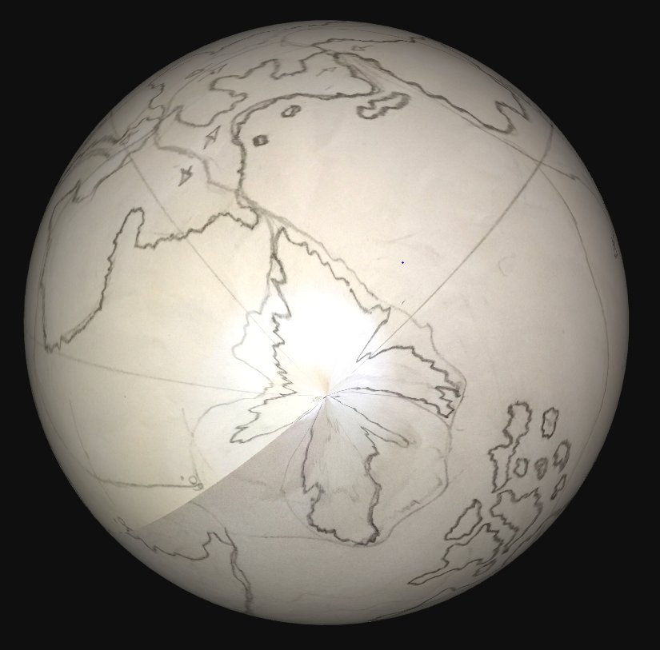

Designing a Habitable Planet
Ester, which if you've read my previous post about designing a Solar System, is the sole habitable planet of the Basterous Solar System. This article is going to follow the process of creating the planet itself, certain properties such as radius, mass, gravity and such have already all been decided in the previous article; therefore this article will focus mostly on the placement of land masses, the science behind it and portraying them on a map.

This is unsurprisingly quite difficult, especially if you'd like to make a sound tectonic plate system. Initially, I was just drawing what I thought looked cool, just some random shapes here and there with some oceans. This was going to serve as my first draft, and I will be basing everything on this. Yes, the most southern continent does look like France; was I in France when I drew that? Yes, I actually was on a train to Bordeaux. My absolute favourite continent in this initial draft is the complete one towards the south, with it's own Drake Passage separating it from the polar continent of the south; let's just say I have a bit of a soft spot for the antarctic pensinsula.
A very big problem with this map is how badly it projects onto a globe, as you may know, projecting a map of a globe onto a 2D surface has always been an issue for humans, in that there is always a form of compromise. Mercator's projection, for example, inflates the size of objects in that the further away from the equator they are, the larger they appear. As you can see on the left, the poles are completely malformed when converting this first draft to a globe. From now on, everything I make will therefore follow the equirectangular projection, as it is one of the simpler ones to wrap your head around when drawing continents. Also it seems to be a default in the world-building community, and I'm too much of a noob to contest it.